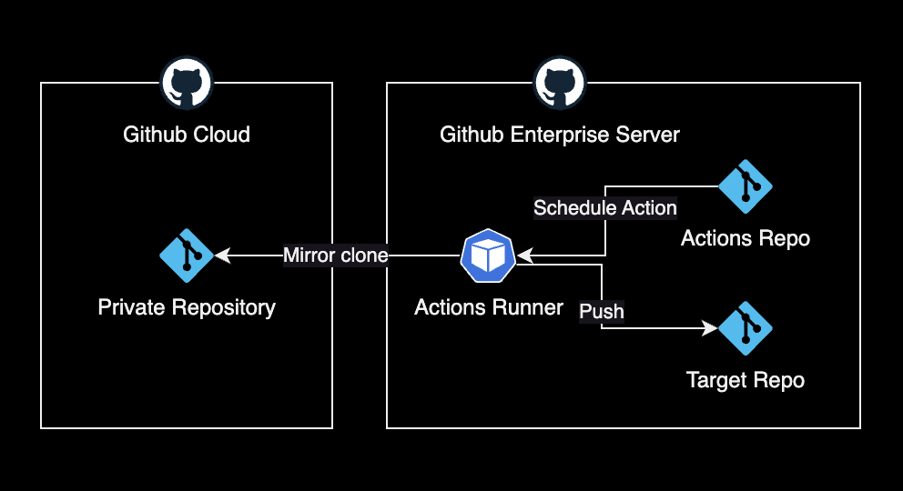
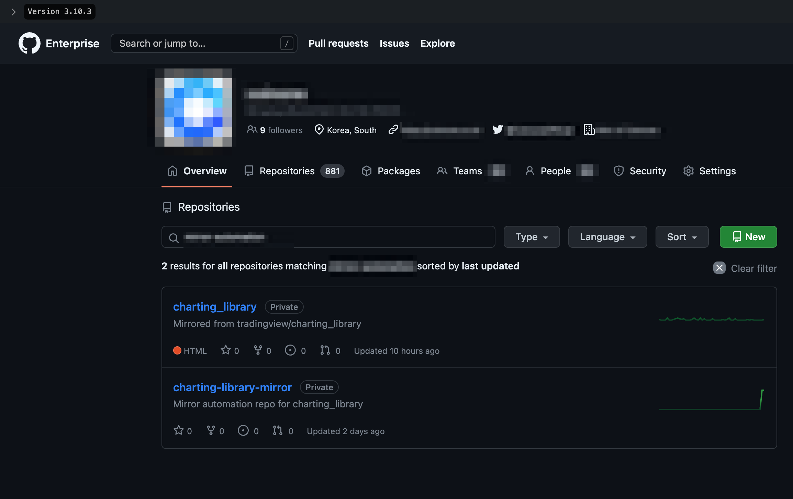
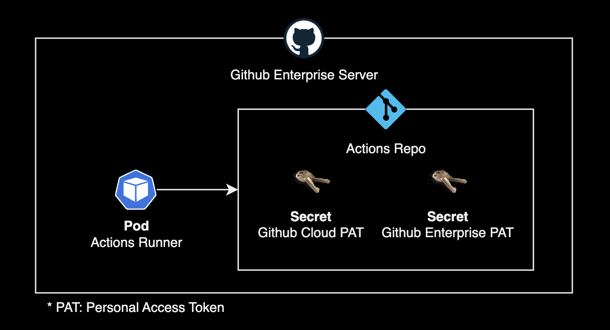

GHES Mirror Action
개요
Github Actions를 사용해서 Github Cloud에 있는 Private Repository를 Github Enterprise Server의 레포로 Mirror clone 하는 방법을 소개합니다.
Github Actions를 사용해서 자동화하는 시나리오입니다.
준비사항
Mirror Clone을 구현하기 전에 다음 준비사항이 필요합니다.
Actions Runner
Github Enterprise Server는 Github Cloud와 다르게 Actions Workflow를 실행하는 머신인 Actions Runner의 구축이 필요합니다.
Actions Runner는 크게 2가지 방식으로 구축할 수 있습니다.
- EC2 : EC2 기반의 Actions Runner
- EKS : Actions Runner Controller를 사용한 Pod 기반의 Actions Runner
제 경우 컴퓨팅 비용 절감 및 운영 자동화 측면에서 EKS 방식을 사용해서 Actions Runner를 운영하고 있습니다.
제 환경에서는 Amazon EKS 기반의 Runner를 운영하고 있습니다.
EKS 클러스터에 Actions Runner Controller를 헬름 차트로 설치했습니다.
$ helm list -n actions-runner-system
NAME NAMESPACE REVISION UPDATED STATUS CHART APP VERSION
actions-runner-controller actions-runner-system 40 2023-11-14 16:13:08.829636 +0900 KST deployed actions-runner-controller-0.23.3 0.27.4
이후 Actions Runner를 클러스터에 배포해서 사용중입니다.
$ kubectl get runner -A
NAMESPACE NAME ENTERPRISE ORGANIZATION REPOSITORY GROUP LABELS STATUS MESSAGE WF REPO WF RUN AGE
actions-runner mgmt-basic-runner-zczrf-mfzdx doge ["XXXXX-MGMT-EKS-CLUSTER","m6i.xlarge","support-horizontal-runner-autoscaling","ubuntu-22.04","v2.311.0","build"] Running 9h
actions-runner mgmt-cd-runner-wrftn-wxgwq doge ["XXXXX-MGMT-EKS-CLUSTER","m6i.xlarge","ubuntu-22.04","v2.311.0","deploy"] Running 10h
자세한 설치 방법이 궁금한 분들은 Actions Runner Controller 구성 페이지를 참고하세요.
구현
Mirror Clone을 받아오는 동작방식은 다음과 같습니다.

Github Enterprise Server에서 2개의 레포를 생성합니다.

2개의 레포는 각각 복제본 결과물을 담는 레포지터리, Actions Workflow가 실행되는 역할을 하는 레포지터리입니다.
- charting_library : Mirror clone 받아온 복제본 레포
- charting-library-mirror : Mirror clone 자동화용 Actions가 실행되는 레포
Actions Workflow 코드입니다.
name: Mirror clone private repository from Github Cloud
on:
# 수동으로 워크플로우를 실행할 수 있도록 함
workflow_dispatch:
# UTC 기준 1일 1회, 0시 0분에 실행되도록 스케줄 설정
schedule:
- cron: '0 0 * * *'
jobs:
checkout_and_push:
runs-on: [self-hosted, linux, build]
steps:
- name: Checkout Private Repo
run: |
git clone --mirror https://<GITHUB_CLOUD_USERNAME>:${{ secrets.ORG_GITHUB_CLOUD_ADMIN_PAT }}@github.com/tradingview/charting_library
ls -alh
- name: Push to target repository
run: |
cd charting_library.git
git config user.name "github-admin"
git config user.email "admin@doge.com"
git remote set-url --push origin https://${{ secrets.DOGECOMPANY_ORG_GITHUB_ENTERPRISE_ADMIN_PAT }}@github-enterprise.example.com/doge/charting_library.git
git push --mirror 2>&1 | tee push.log
continue-on-error: true
on 키워드를 보면 크게 2가지 조건에 의해 Mirror Clone이 트리거됩니다.
worfklow_dispatch: Actions 레포에서 관리자가 직접 실행schedule: Cron Schedule 기반의 정기적인 실행
Github Enterprise Server에 위치한 Mirror용 Repository에는 2개의 Actions Secret을 생성해두어야 합니다.

${{ secrets.ORG_GITHUB_CLOUD_ADMIN_PAT }}에는 Github Cloud 계정의 PAT를 시크릿으로 생성해야 합니다.${{ secrets.DOGECOMPANY_ORG_GITHUB_ENTERPRISE_ADMIN_PAT }}에는 Github Enterprise Server의 관리자 계정 PAT를 시크릿으로 생성해야 합니다.